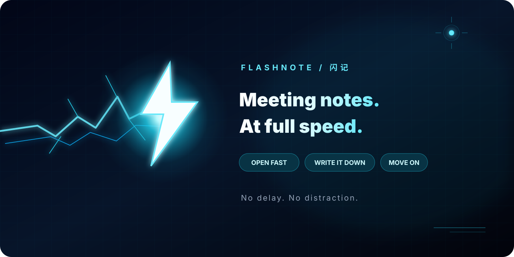

Windows installer
Double-click to install for your user account. Run a newer installer to upgrade in place.
Default notes folder: Documents\闪记
Open fast. Capture everything. Get out of the way.

Windows only for now. Requires Microsoft Edge or WebView2. No administrator rights needed.
macOS and Linux builds are in the works.
Double-click to install for your user account. Run a newer installer to upgrade in place.
Default notes folder: Documents\闪记
Skip setup. Download, open, write, close.
To remove the installed app: Windows Settings → Apps → 闪记
No Edge? Install the WebView2 Runtime first.
Launch straight into your recent notes. No setup ritual.
Vditor renders as you type, with a clean Typora-like experience.
Every note is a local .md file you can keep, move, or edit anywhere.
Focus when you need it. Close the app when you don’t.
| Key | Action |
|---|---|
| Ctrl+N | New meeting note |
| Ctrl+K | Find and open a note |
| Ctrl+W | Close the current tab |
| Ctrl+Tab | Next open note |
| Ctrl+; | Insert current time |
| Ctrl+S | Save immediately |
| Ctrl+E | Export as Markdown |
| Ctrl+\ | Toggle the sidebar |
| Ctrl+Shift+F | Toggle focus mode |
| Ctrl+A | Select all in the current note |
| Ctrl+B | Bold |
| Ctrl+I | Italic |
| Ctrl+U | Underline |
| Ctrl+1 … Ctrl+6 | Heading 1–6 |
| Tab / Shift+Tab | Indent / outdent lists |
| Ctrl+, | Settings |
| Ctrl+Shift+T | Next theme |
Just write Markdown: # heading · - list · - [ ] todo · > quote · **bold**